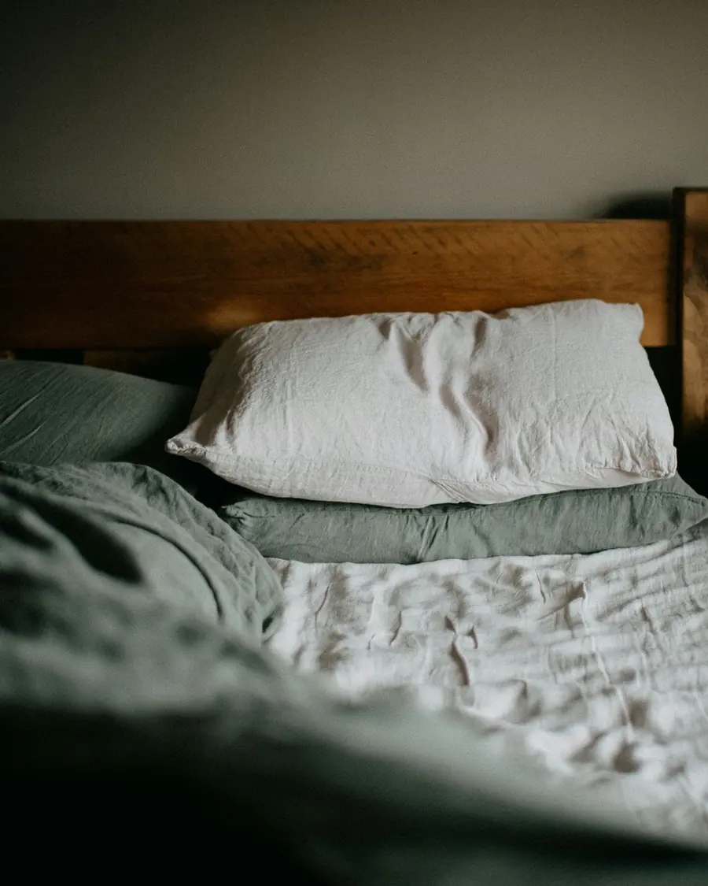
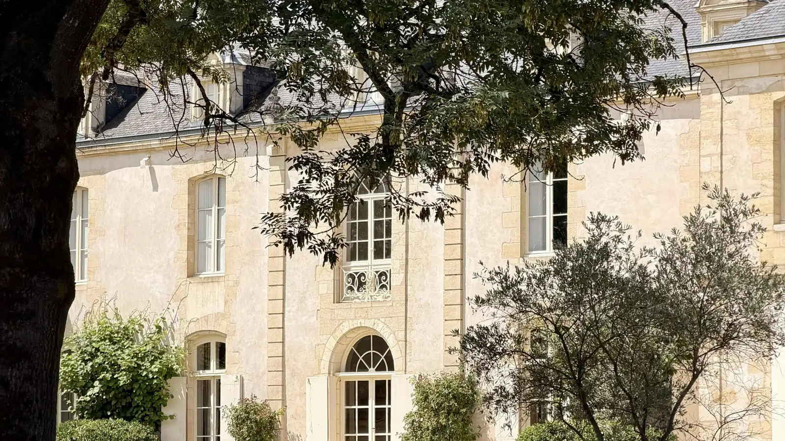
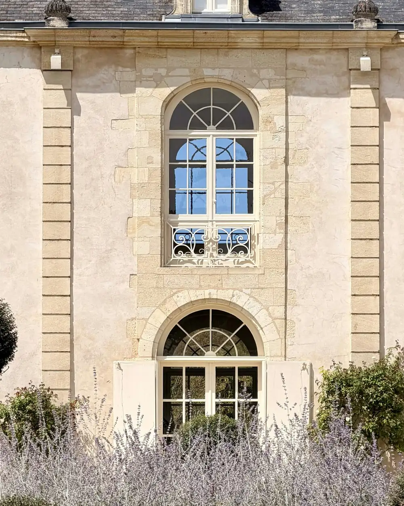
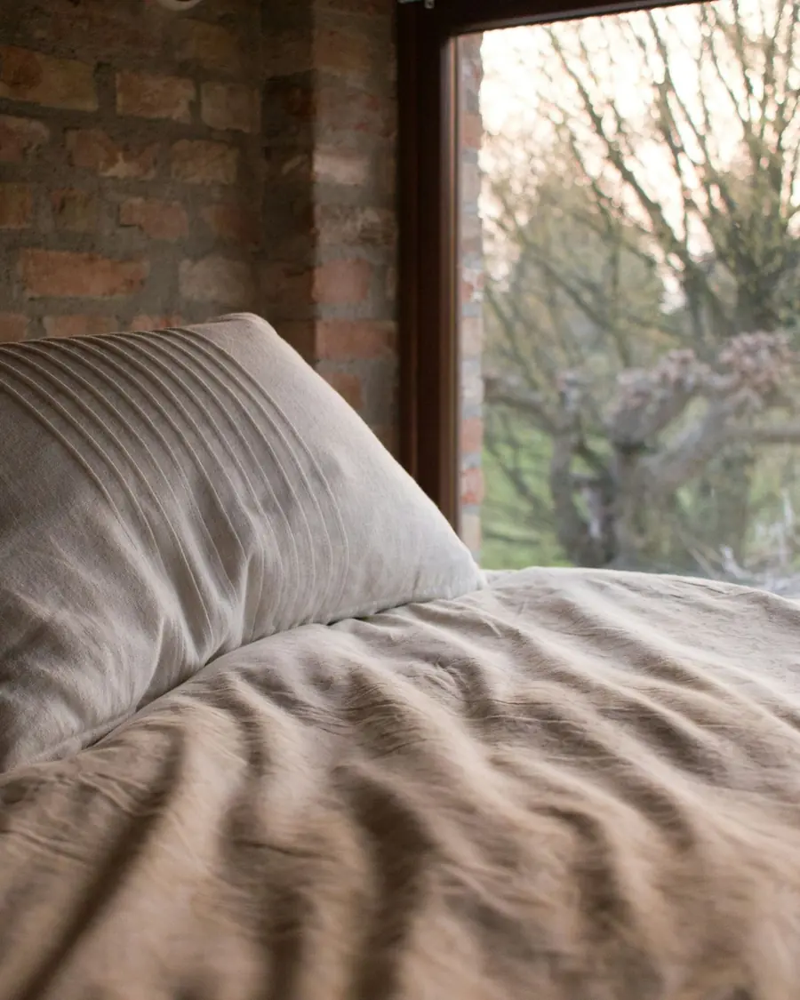
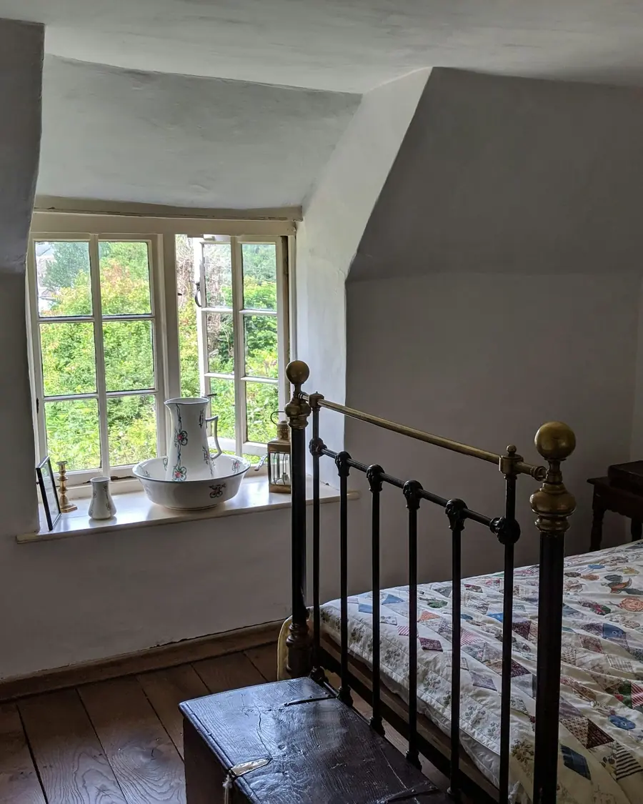
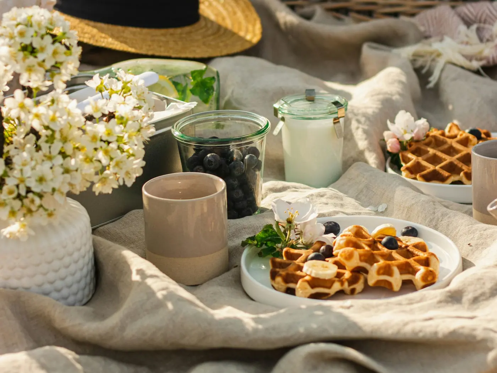
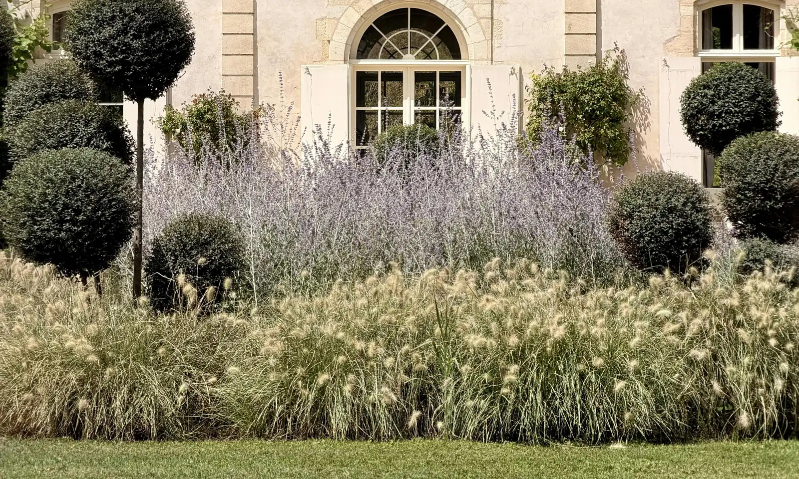
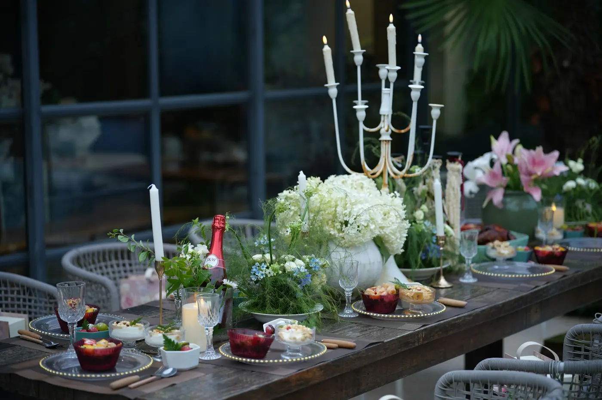

Chambre Tilleul
2 personnes, 24 m²dès 145 €

Une demeure du XVIIIᵉ siècle, cinq chambres et le silence de la campagne. Faites défiler : voici une journée chez nous.
Lavandes, herbes folles et tilleuls centenaires. On s'y installe avec un livre jusqu'au soir.
Literie haut de gamme, murs épais, fenêtres sur le parc. Ici, le seul bruit, c'est le vent.
Viennoiseries du village, confitures maison, fruits du verger. Servi au jardin dès les beaux jours.
Une cuisine de saison partagée à la grande table, à la lueur des bougies. Sur réservation.
Restaurée avec patience, la demeure a gardé ses poutres, ses tomettes et son jardin de tilleuls. On y vient pour se poser, et l'on repart reposé.

Linge de lin, salles de bains en pierre, vue sur le parc. Choisissez la vôtre : elle sera prête dans le formulaire.



Deux autres chambres vous attendent sous les toits.



Un petit-déjeuner du terroir, servi quand vous descendez.
Piscine face aux champs, vélos et canoë pour aller à la rivière.
La table d'hôtes, quatre soirs par semaine, avec les produits des fermes voisines.
« Nous sommes venus pour deux nuits, nous sommes restés cinq. »Avis fictif, pour la démonstration
Au meilleur prix, sans commission, avec une réponse sous 24 heures. Le total se calcule pendant que vous choisissez.